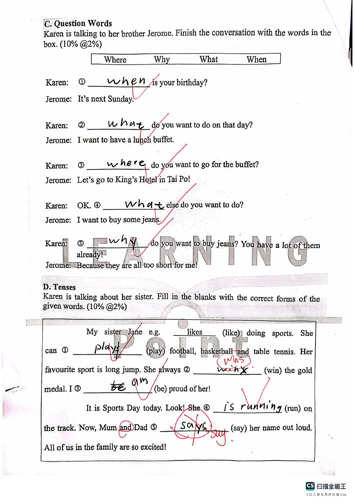
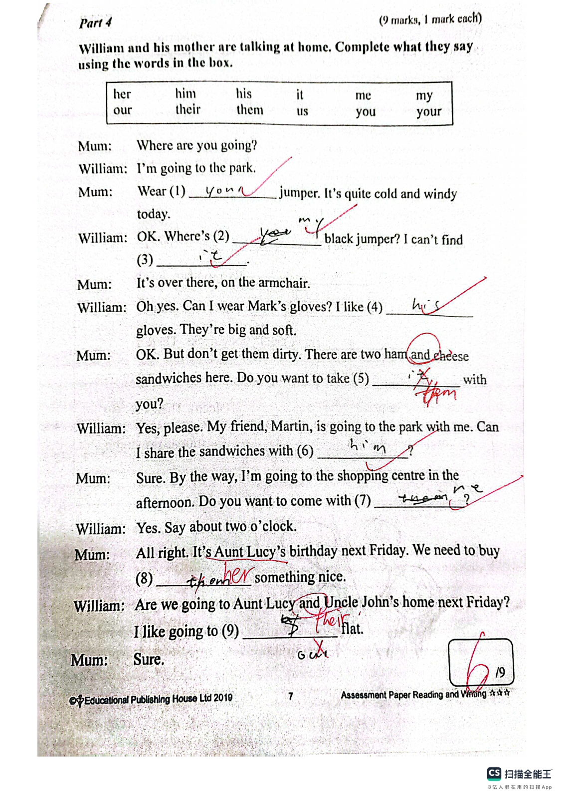

Answer: (a) 85320; (b) 20385
已掌握
| # | 单词/词组 | 中文意思 | 例句/说明 | 已掌握 |
|---|---|---|---|---|
| noun 名词 | ||||
| 1 | rule | 规则 | We should follow the rules. | |
| 2 | hall | 大厅 | We meet in the school hall. | |
| 3 | pet | 宠物 | My pet is a hamster. | |
| 4 | fur | 皮毛 | The rabbit has soft fur. | |
| 5 | monitor | 班长 | The monitor helps the teacher. | |
| 6 | Saturday | 周六 | I play football on Saturday. | |
| 7 | family | 家庭 | My family is happy. | |
| 8 | autumn | 秋天 | The leaves turn yellow in autumn. | |
| 9 | belt | 腰带 | He wears a black belt. | |
| verb 动词 | ||||
| 10 | match | 匹配；比赛 | Please match each word to the correct picture. | |
| phrase 短语 | ||||
| 11 | turn right | 右转 | Turn right after the shop. | |
| 12 | set the table | 摆餐具 | I set the table before dinner. | |
| adjective 形容词 | ||||
| 13 | impolite | 不礼貌的 | It is impolite to shout. | |
| 14 | pretty | 漂亮的 | The flower is pretty. | |
| uncategorized 未分类 | ||||
| 15 | sea | 大海 | We swam in the sea. | |
| 16 | learn | 学习 | We learn new words every day. | |
| 17 | meet | 见面 | Let's meet at the school gate. | |
| 18 | case | 盒子 | Put your pencils in the case. | |
| 19 | assist | 协助帮助 | I assist my teacher by handing out books. | |
| 20 | find | 找到 | I cannot find my pencil. | |
| # | 单词/词组 | 中文意思 | 例句/说明 | 已掌握 |
|---|---|---|---|---|
| adjective 形容词 | ||||
| 1 | newborn | 新生的 | The newborn baby is small. | |
| 2 | smart | 聪明的 | The smart girl solved the puzzle. | |
| 3 | cheerful | 快乐的；开朗的 | Sarah is cheerful — she always smiles. | |
| noun 名词 | ||||
| 4 | beach | 海滩 | I want to go to the beach. | |
| 5 | grammar | 语法 | We are learning English grammar. | |
| 6 | leader | 领导者 | The leader helps the group. | |
| 7 | genie | 精灵 | The genie grants a wish. | |
| 8 | pond | 池塘 | There is a small pond in the park. | |
| 9 | workplace | 工作地点 | A school is a teacher's workplace. | |
| 10 | event | 事件 | This event is fun. | |
| 11 | lettuce | 生菜 | Is there any lettuce in the fridge? | |
| 12 | Maths | 数学 | Louise is good at doing sums in Maths. | |
| 13 | Putonghua | 普通话 | Li Ying is good at Putonghua. | |
| noun phrase 名词短语 | ||||
| 14 | high jump | 跳高 | He can do the high jump. | |
| 15 | role model | 榜样；模范 | She is a role model for younger students. | |
| 16 | Parents' Day | 家长日 | Parents' Day is on 15th October. | |
| 17 | the school picnic | 学校野餐 | The school picnic is on 23rd November. | |
| 18 | country park | 郊野公园 | I want to go to the country park. | |
| 19 | a box of chicken wings | 一盒鸡翅 | May I have a box of chicken wings, please? | |
| 20 | a spoon | 勺子 | Use a spoon to serve the soup. | |
| verb 动词 | ||||
| 21 | save | 拯救 | We can save the bird. | |
| 22 | roll | 转动 | The ball can roll. | |
| phrase 短语 | ||||
| 23 | step on | 踩到 | Be careful not to step on the flowers. | |
| verb phrase 动词短语 | ||||
| 24 | playing board games | 玩桌面游戏 | We like playing board games. | |
| 25 | doing puzzles | 拼图；解谜 | I like doing puzzles. | |
| uncategorized 未分类 | ||||
| 26 | refuse | 拒绝 | I refuse to tell a lie. | |
| 27 | matter | 要紧，有关系 | It does not matter if we are a little late. | |
| 28 | corresponding | 相对应的 | Write each answer in the corresponding box. | |
| 29 | organic | 有机的 | My uncle grows organic vegetables. | |
| 30 | royal | 皇家的 | The king lives in a royal palace. | |
| # | 单词/词组 | 中文意思 | 例句/说明 | 已掌握 |
|---|---|---|---|---|
| time/date 时间日期 | ||||
| 1 | November | 十一月 | November is the eleventh month. | |
| 2 | Tuesday | 星期二 | Tuesday is a weekday. | |
| 3 | Wednesday | 星期三 | Wednesday is a weekday. | |
| 4 | Thursday | 星期四 | Thursday is a weekday. | |
| directions 方向 | ||||
| 5 | north | 北 | North is a direction. | |
| numbers 数字 | ||||
| 6 | four | 4 | Four is 4. | |
| 7 | seven | 7 | Seven is 7. | |
| 8 | ten | 10 | Ten is 10. | |
| 9 | thirteen | 13 | Thirteen is 13. | |
| 10 | sixty | 60 | Sixty is 60. | |
| 11 | eighty | 80 | Eighty is 80. | |
| solid shape 立体图形 | ||||
| 12 | quadrilateral pyramid | 四棱锥 | A quadrilateral pyramid has one quadrilateral base and four triangular side faces. | |
| 13 | hexagonal pyramid | 六棱锥 | A hexagonal pyramid has one hexagonal base and six triangular side faces. | |
| 14 | cone | 圆锥 | A cone has one curved face. | |
| 15 | base | 底 | The base is at the bottom. | |
| # | 单词/词组 | 中文意思 | 例句/说明 | 已掌握 |
|---|---|---|---|---|
| operations 运算 | ||||
| 1 | addition | 加法 | Addition means putting numbers together. | |
| geometry 几何 | ||||
| 2 | obtuse angle | 钝角 | An obtuse angle is greater than 90 degrees and less than 180 degrees. | |
| 3 | grid | 网格 | A grid helps us find positions. | |
| question word 题目词 | ||||
| 4 | compare | 比较 | We compare two numbers. | |
| 5 | calculate | 计算 | Calculate the answer. | |
| 6 | count | 数数 | Count from 1 to 10. | |
| answer 答案 | ||||
| 7 | correct | 正确的 | Choose the correct answer. | |
| place value 位值 | ||||
| 8 | 5-digit number | 五位数 | 12,345 is a 5-digit number. | |
| comparison 比较 | ||||
| 9 | less | 更少的；小于 | 8 is less than 10. | |
| 10 | more | 更多 | 8 is more than 5. | |
| 11 | least | 最小的；最少的 | Which number is the least? | |
| 12 | lightest | 最轻的 | The 1 kg bag is the lightest of the 1 kg, 2 kg and 3 kg bags. | |
| 13 | heaviest | 最重的 | The 3 kg bag is the heaviest of the 1 kg, 2 kg and 3 kg bags. | |
| time/date 时间日期 | ||||
| 14 | small division | 小格（钟面上的一分钟刻度） | The minute hand moves one small division in one minute. | |
| 15 | second hand | 秒针 | The second hand goes around the clock once in one minute. | |
| 16 | midnight | 半夜；午夜（凌晨零点） | Midnight is twelve o'clock at night. | |
| operations calculation 运算 | ||||
| 17 | subtract A from B | B-A | "Subtract A from B" means B - A. | |
| 18 | mixed operations | 混合运算 | Mixed operations use more than one operation. | |
| 19 | expression | 式子 | Write the expression in horizontal form. | |
| 20 | quotient | 商 | The quotient is the answer in division. | |
| 21 | remainder | 余数 | The remainder is left after division. | |
| 22 | divide A by B | A 除以 B | Divide A by B. | |
| currency money 货币 | ||||
| 23 | coin | 硬币 | The coin is round. | |
| measurement 测量 | ||||
| 24 | metre | 米 | A metre is 100 centimetres. | |
| 25 | measure | 测量 | We measure the length with a ruler. | |
| 26 | kilometer | 千米 | One kilometer is 1,000 meters. | |
| 27 | kilogram | 千克 | One kilogram is 1,000 grams. | |
| position order 位置和顺序 | ||||
| 28 | following | 下面的 | Answer the following questions. | |
| data charts 统计图 | ||||
| 29 | block chart | 方块图 | Read the block chart. | |
| plane shape 平面图形 | ||||
| 30 | leg | 腰（梯形的非平行边） | A leg of a trapezium is a non-parallel side. | |

